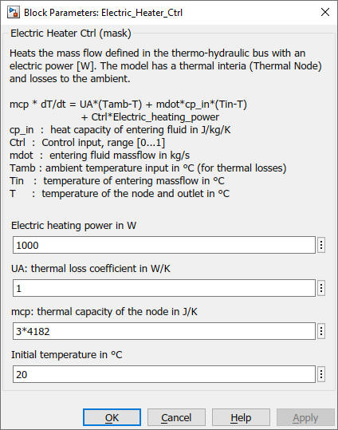

Electric_Heater_Ctrl
Path: CARNOT/Source/Boiler
Purpose:
Model of an electrical heater (instantaneous water heater).
Description:
The model heats the entering mass flow of the
Thermo-Hydraulic Bus with an electric power. A Thermal Node is used to
model the thermal inertia of the heater and losses to the ambient. The model
is described by the equation:
&nbps;&nbps;&nbps;&nbps; mcp * dT/dt = UA*(Tamb-T) + mdot*cp_in*(Tin-T) + Ctrl*Electric_heating_power
with
| cp_in | : | heat capacity of entering fluid in J/kg/K |
| Ctrl | : | Control input, range [0...1] |
| mcp | : | thermal capacity of the heater in J/K |
| mdot | : | entering fluid massflow in kg/s |
| Tamb | : | ambient temperature for the thermal losses in °C |
| Tin | : | temperature of entering massflow in °C |
| T | : | temperature of the node and outlet in °C |
| Electric_heating_power | : | heating power input in W |
| UA | : | thermal loss coefficient in W/K |
Input:
| THBin | : | Thermo-Hydraulic Bus of the inlet |
| Tamb | : | Ambient temperature in °C |
| Ctrl | : | Control signal input |
Output:
| THBout | : | Thermo-Hydraulic Bus of the outlet |
| EHdat | : | Data bus for evaluation and display |
The electric heater data bus EHdata contains the following data points:
| THBout | : | Thermo-Hydraulic Bus of the outlet |
| THBin | : | Thermo-Hydraulic Bus of the inlet |
| Electric_heating_power | : | heating power input in W |
| ControlSetpoint | : | Control setpoint signal input (Ctrl) |
| ControlActual | : | Applied control signal |
The control signal is not limited to [0..1]. A negative value leads to a negative heating power (= thermal load), if the "Electric heating power" parameter is positive.
Parameters and Dialog Box:

Examples:
Open the example explorer from the Matlab command window
ExampleBrowser
or load the examples via the CARNOT library.
Characteristics:
| Direct Feedthrough | : | Yes |
| Sample Time | : | Inherited from driving block |
| Vectorized | : | No |